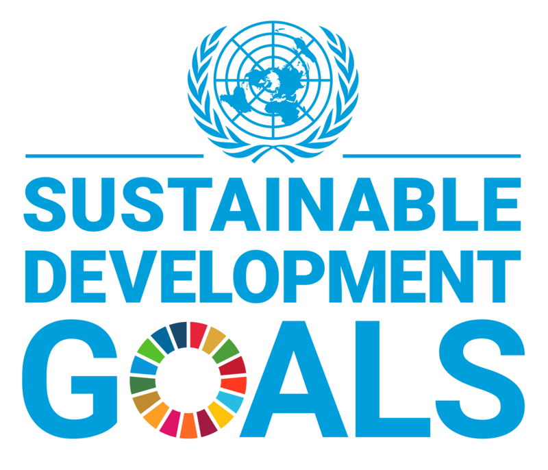

Apa itu SDGs?

SDGs adalah singkatan dari Sustainable Development Goals, atau Tujuan Pembangunan Berkelanjutan. Ini adalah agenda global yang disepakati oleh PBB pada tahun 2015 untuk mengakhiri kemiskinan, mengurangi kesenjangan, melindungi planet, dan memastikan perdamaian serta kesejahteraan bagi semua orang pada tahun 2030. Agenda ini mencakup 17 tujuan utama yang saling terkait di berbagai aspek sosial, ekonomi, dan lingkungan.Tujuan utama SDGs
Tujuan utama SDGs adalah untuk mengakhiri kemiskinan, mengurangi kesenjangan, dan melindungi lingkungan hidup. Hal-hal yang memastikan kesejahteraan bagi semua orang. Agenda ini bersifat universal, artinya setiap negara didorong untuk mengambil tindakan dalam mencapai tujuan-tujuan tersebut. SDGs berfokus kepada lima aspek utama, yaitu manusia (humanity), planet Bumi (planet), kemakmuran (prosperity), perdamaian (Peace), dan kemitraan (Partnership).